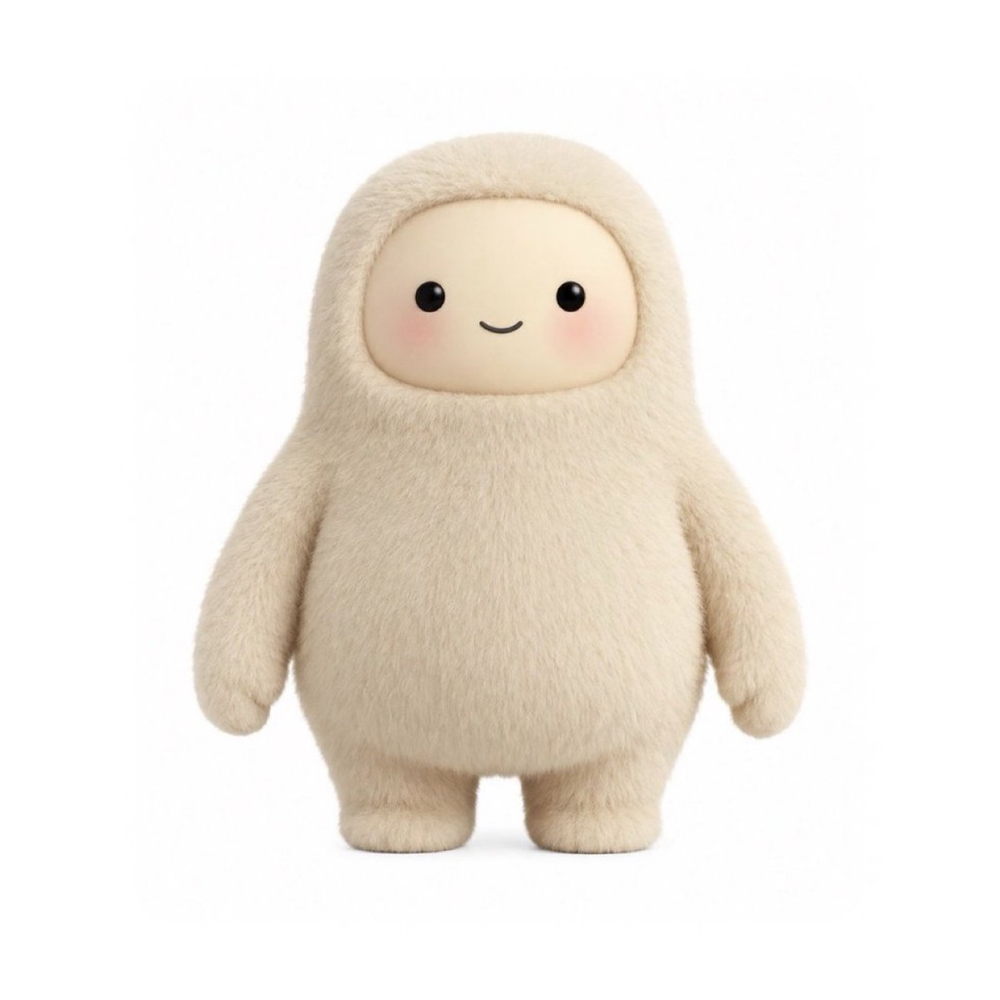
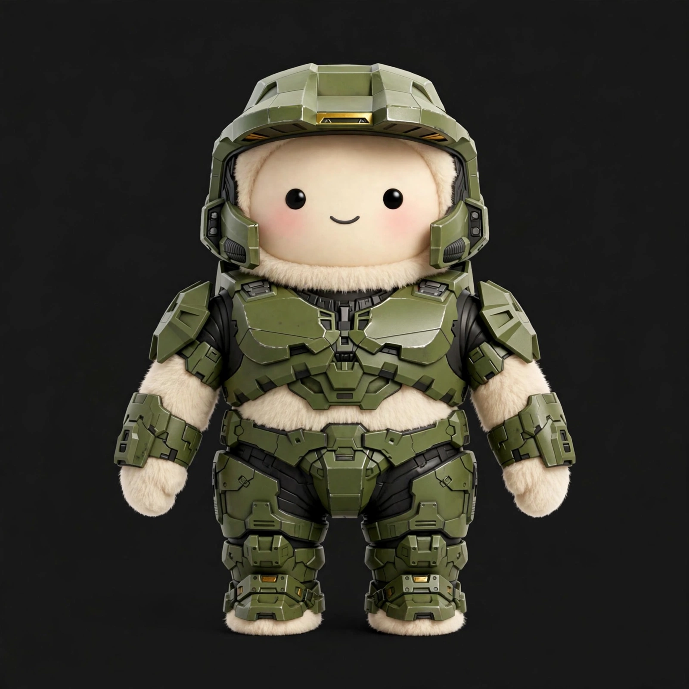

A community studio for the Meta Muse character
Turn Muse into anyone.
Copy the prompt, attach your Muse photo, and generate your own full body character icons. Download ours, or make your own and share it.

Gallery
Thirteen Muses, ready to download.
Every one is full body, every face untouched. Pick one to preview it large, download it, or copy a prompt tuned for its theme.

{kind=link}
Make your own
The prompt.
Read it first, then copy it. Both versions start the same way: attach your Muse reference photo, then send the text. Short fits anywhere. Full is the complete spec.
Full prompt
- 01Copy the prompt.
Pick short or full above. What you see in the box is exactly what gets copied.
- 02Attach your Muse reference photo.
The prompt matches every detail to that photo. No photo handy? Download the reference photo.
- 03Open Muse, paste, send.
Open Muse in a new tab, attach the photo, paste the prompt, and send.
{kind=link}
Muse's image generation is the recommended tool for this prompt.
Running into trouble?
Not signed in
If Muse asks you to sign in first, that is normal. Sign in, then come back and paste the prompt again.
On a mobile browser
Attaching a photo works best in the Muse app. If your mobile browser will not attach the photo, switch to the app and try there.
Variations
Make it yours.
- Change the theme line. Swap
[THEME]for anything: a show, a game, a movie, your Dungeons and Dragons character. - Leave the base character section alone. That part is what keeps every result reading as Muse.
- One change at a time. Follow-up edits work best when you ask for a single change per message.
Want it moving?
Generate the still first, then run it through an image to video tool with a simple motion prompt like "gentle idle bounce, soft blink". The still is the hard part. Motion is easy after that.
Community
Made something? Show it.
The best community creations get featured here, with credit.
- 01Post it on X.
Share your Muse creation with the hashtag
#MuseCharacterStudio. - 02Get featured.
Submissions are curated by hand. If yours is picked, it lands in the carousel below with your name and a link to your post.
#MuseCharacterStudio
Your Muse could be here.
Nothing featured yet. Post with the hashtag to be first.
A note from the studio's builder.
If you are hiring an engineering product manager, I am looking for a great company to call home. That's me: jononeill.dev.